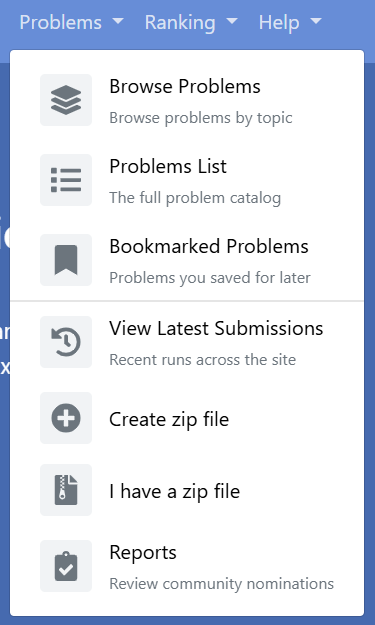
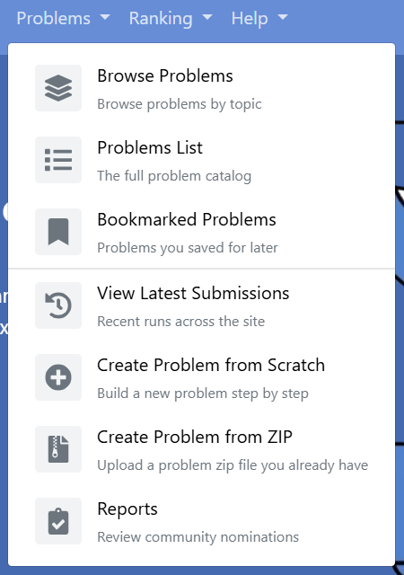

This is my summer with omegaUp: what was wrong with its background jobs, what I built, where each piece stands today, and what I got wrong along the way. This page is the summary. Each part has its own page with the detail, and the work from before and after the summer is here too, because it did not start in May and it has not stopped.
Summary
omegaUp is an open source competitive programming platform, used mostly by students and teachers across Latin America. You submit a solution to a problem, it gets judged automatically, and your result feeds into rankings, badges and the suggestions the site makes about what to solve next.
Behind the site a handful of Python scripts run on a schedule overnight. They recompute the rankings, hand out badges, aggregate the feedback students leave on problems, and train the model that decides what to recommend. None of that is visible from the website, and none of it was visible to the people running the website either.
That was the problem. There was no record that a job had run at all, so when one died halfway through, the first sign would be a student noticing days later that a problem they had solved had never counted. Nothing stopped two copies of the same job running at once. And an admin who wanted to rerun a job needed shell access to a production server to do it.
While reading omegaUp's production deployment repository I found a commit from December 2021 saying "Make update-ranks only run once a day for now". The "for now" had been holding for five years. In the same afternoon I found that the recommendation model was never trained in production at all, because that job had never been added to the schedule.
So I built three things that share one foundation.
The first is a control plane for the cron jobs. Two tables record every job the platform has and every
time one of them ran. A shared runner wraps each job so it writes itself into that history and takes a lock,
so two copies can never overlap. An admin page at /admin/crons shows all of it. A rerun button, still in
review, lets an admin run a job again without touching a server.
The second is scheduled training for the recommendation model. Every run records how good the model it produced was, and a guardrail refuses to publish one that is below a floor or measurably worse than the model it would replace.
The third is a nightly job that looks for problems which silently stopped working. It needed no admin page of its own. It runs through the same runner, so it appeared on the page by itself.
In one paragraph: before this summer, if a background job on omegaUp failed at three in the morning, nobody found out until a student complained. Now the run is written down, it cannot collide with itself, an admin can see it from a web page, and the two jobs most likely to publish bad data check their own work before they publish it.
About me
I am a third year Integrated B.Tech and M.Tech student in Information Technology at IIITM Gwalior. My first pull request to omegaUp was on 31 August 2025, nine months before this project started, and by the time the coding period began twenty one of them had merged, including GitHub sign in and a fix for endpoints that changed data on a plain GET request. That mattered mostly because I did not spend the first month of the summer finding my way around the codebase.
That earlier work is on Before the summer.
How the project changed shape
My original proposal was narrow. It was about cleaning up four Python scripts: unsafe SQL, the near total absence of unit tests, bare except blocks, magic numbers. By the time coding started, other contributors had already merged several of the items I had proposed, so the first thing I did was check each one against main and cut the plan down to what was left.
At the midterm I passed, and the feedback was that the work so far did not add up to one thing you could point at. It was many small improvements spread thinly across existing scripts. What was wanted was something vertical: a single project cutting through the database, the backend, the jobs, the interface and the tests, where the result is a feature somebody can see.
Rather than choose the next project alone, I read the production deployment repository so I would be arguing from facts, wrote up fourteen candidate projects, and sent them to my mentor saying I was not attached to any of them and would rather know what the organisation needed. Juan Pablo chose one and named the two that should follow it:
the highest priority is building a Cron Control Plane. Today our cron infrastructure lacks visibility and operational tooling. After that, automated problem health checks and scheduled training for the recommendation model.
So the second half became three projects sharing one foundation. The first half, including the promise from my proposal that I took back, is on Tests and query fixes.
The shared foundation
How the shared runner works
Every job now wraps its main() in one small helper:
with lib.runner.run(parser.prog, args) as cron_run:
with cron_run.phase('update_users_stats'):
update_users_stats(...)
cron_run.set_rows_affected(rows)The lock lives in the database, not on disk, because these jobs can run on different machines and a lock file on one machine means nothing to a job on another. It also solves the failure I was most worried about. The database ties the lock to the connection, so if a job dies while holding it, the lock releases by itself. A crash cannot jam the door shut.
Project one: the cron control plane
Two tables, the runner, an admin API and a page. The page shows the health of each job, how long each run took, the timing of every step inside a run, and the error if there was one.
The rerun button is the piece I thought hardest about. The obvious version is that the button sends a request and the server runs the job. I did not do that, because the moment a web page can cause a program to run on your servers you have built a door. The button writes down a request, and a separate worker that is already running on the inside picks it up, and only for jobs on a fixed list it knows about.
Project two: scheduled recommendation model training
omegaUp has a model that answers "this student just solved problem X, what should they try next". It was a script somebody had to remember to run. Nothing recorded what past training produced, and a bad run would silently overwrite the good model file.
It is now in the registry with a weekly schedule. Every run records a score for the model it produced, and two rules decide whether that model is published. Juan Pablo's review of this one found that the score I was recording was not the metric its name claimed, which is the most useful thing a reviewer told me all summer.
Project three: automated problem health checks
A problem on omegaUp can stop working after it is published, and nothing errors loudly. Students hit a wall, and the only signal was somebody filing a report, which means the platform found out about broken problems from the people it had already failed. A nightly job now looks for four kinds of breakage and keeps a record of when each was first seen.

Problem health checks
A nightly job that finds problems which quietly stopped working.
read →Work alongside the main project
Three other pieces ran alongside the cron work and all three are merged: the navigation menus rebuilt from one configuration file, a reusable "this view is unavailable" page, and a system settings feature that lets an admin switch the embedded IDE off without a deploy.


Current status
This is where things stood on 8 October 2026. The status columns on this site refresh from GitHub when a page loads, so if something has moved since, the tables will say so and this paragraph is the part that will be out of date.
On main and done. The registry and run history tables, the runner, the admin API and the admin page. Every cron job on omegaUp runs through the runner, so each one writes itself into the history, takes a lock that stops a second copy starting, and times each of its phases. The ranking job checks its own result before it publishes. The recommendation model records and guards every training run. The health check job runs nightly, its production schedule was added on 6 October, and its findings are on the admin page.
In review. The rerun feature, which Juan Pablo asked me to split into small stacked pull requests in October. Its table and data access layer are merged. The other four are open in the order they need to land: the endpoint, the worker, the button and the end to end test. Behind them are the second pass on the admin page and the model quality table.
Not done. The model trainer has a weekly schedule in the registry, but the matching entry in the production deployment has not been added yet, so it is not running in production. That needs the open pieces to land first.
What sets the pace now is review time, on a project maintained by volunteers. Nothing is half built and nothing is waiting on me. What has merged since the coding period ended is on After the summer.
Pull requests
I opened 31 pull requests during the coding period and 26 of them have merged. Counting by merge date instead, 22 landed between 26 May and 24 August, because some had been waiting since before it began. Each one had an issue written before it, so the reason for a change existed in writing before the change did.
show this as a table
| PR | What | Opened | Outcome | Days |
|---|---|---|---|---|
| #9871 | NavbarItem | 26 May 2026 | merged | 44 |
| #9883 | cron test infrastructure | 2 Jun 2026 | merged | 83 |
| #9889 | update_ranks tests | 7 Jun 2026 | merged | 79 |
| #9900 | parameterized queries | 12 Jun 2026 | merged | 62 |
| #9901 | typed excepts | 12 Jun 2026 | merged | 47 |
| #9903 | rank upsert | 12 Jun 2026 | merged | 63 |
| #9914 | structured logs | 19 Jun 2026 | merged | 67 |
| #9919 | view unavailable | 21 Jun 2026 | merged | 18 |
| #9920 | assign_badges tests | 21 Jun 2026 | merged | 66 |
| #9940 | named constants | 26 Jun 2026 | merged | 7 |
| #9967 | other menus | 4 Jul 2026 | closed, not merged | 35 |
| #9968 | menus from config | 4 Jul 2026 | merged | 25 |
| #9995 | tables | 13 Jul 2026 | merged | 15 |
| #9996 | data access | 13 Jul 2026 | merged | 28 |
| #9998 | runner | 13 Jul 2026 | merged | 37 |
| #10000 | admin api | 13 Jul 2026 | merged | 32 |
| #10003 | update_ranks | 14 Jul 2026 | merged | 36 |
| #10008 | dashboard | 14 Jul 2026 | merged | 46 |
| #10009 | badges, feedback | 14 Jul 2026 | merged | 38 |
| #10011 | ranking audit | 15 Jul 2026 | merged | 42 |
| #10021 | dispatcher | 16 Jul 2026 | still open | 84 |
| #10022 | other jobs | 16 Jul 2026 | merged | 37 |
| #10023 | dashboard e2e | 16 Jul 2026 | closed, not merged | 44 |
| #10025 | generic entrypoint | 16 Jul 2026 | merged | 1 |
| #10048 | dashboard v2 | 26 Jul 2026 | still open | 74 |
| #10050 | model runs table | 27 Jul 2026 | merged | 33 |
| #10051 | guarded training | 27 Jul 2026 | merged | 53 |
| #10052 | model quality view | 27 Jul 2026 | still open | 73 |
| #10065 | findings table | 31 Jul 2026 | merged | 14 |
| #10066 | health check job | 1 Aug 2026 | merged | 47 |
| #10069 | findings view | 3 Aug 2026 | merged | 65 |
| #10149 | findings dao | 29 Aug 2026 | merged | 0 |
| #10150 | model runs dao | 29 Aug 2026 | merged | 11 |
| #10153 | findings api | 29 Aug 2026 | closed, not merged | 0 |
| #10154 | model api | 29 Aug 2026 | closed, not merged | 0 |
| #10155 | request table | 29 Aug 2026 | merged | 19 |
| #10156 | request dao | 29 Aug 2026 | merged | 39 |
| #10157 | rerun api | 29 Aug 2026 | closed, not merged | 0 |
| #10158 | dispatcher | 29 Aug 2026 | closed, not merged | 0 |
| #10159 | enable api | 29 Aug 2026 | closed, not merged | 0 |
| #10275 | rerun api | 3 Oct 2026 | still open | 5 |
| #10276 | rerun button | 3 Oct 2026 | still open | 5 |
| #10277 | cypress | 3 Oct 2026 | still open | 5 |
The full list, including everything before the summer, is on Pull requests. The detail of each one is on the page for its project.
Issues
I have filed 93 issues on omegaUp. The ones behind this project are a parent issue for each of the three parts and one sub issue per pull request under them. All of them are on Issues.
What I learned and what went wrong
The single biggest change is how I write tests. I used to write the test after the fix and move on the moment it went green. Now I break the code on purpose first and check that the test fails, because a test that passes against broken code is decoration. It costs about a minute and it caught two real bugs in my own work this summer, both in code I had written minutes earlier and was certain was correct.
The hardest thing I did was withdraw a promise from my own funded proposal, after I found the problem it solved had already been fixed by somebody else. And the hardest part of the summer had nothing to do with code: at the midterm, not one of my pull requests for the main project had merged, and there was no version of working harder that would change it.
The whole of it is on What I learned.
What is left to do next
The gap I care most about is that the system can tell you a job ran and failed, but it cannot tell you a job never started. The schedule is already stored in the registry, so the pieces are there, and it is the next thing I want to build. After that, failure alerting through the notification path the rerun worker already uses, which is what turns history into monitoring. Then retention, because nothing deletes from the run history. That is fine today and will not be in two years.
Smaller things: pagination past the fifty run cap, a duration sparkline per job, and a "next run" column computed from the schedule that is already stored. I left model versioning and rollback alone on purpose, because the model file layout and the serving side live in omegaUp's production repository and building it blind risked doing it wrong.
Before any of that, the work that is already written has to finish landing, and I am staying for it.
Acknowledgments
Thanks to Juan Pablo for reviews that were specific and for pushing back on the parts that deserved it. The question about storing a name instead of an id made the schema better, the review of the model training job changed what its score means, and the request to split a large pull request changed how I work.
Thanks to Ankit for the review of my test infrastructure that found real bugs in it. Being told early and precisely that my fake database was subtly wrong was worth more than an approval.
And thanks to omegaUp for letting a contributor propose a direction, argue for it with evidence, and then build it.
The rest of it
Before the summer
August 2025 to May 2026: the first fifty seven pull requests.
read →journeyAfter the summer
What has landed since 24 August, and what is still moving.
read →journeyTimeline
Every month since the first pull request, in order.
read →recordsPull requests
Every pull request I have opened on omegaUp, with its status.
read →recordsIssues
Every issue I have filed.
read →recordsReviews
What reviewers asked for, and the threads where I helped someone else.
read →